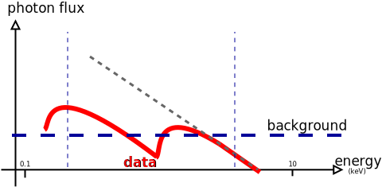
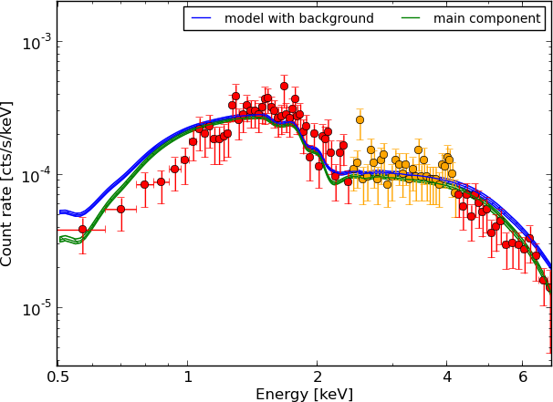
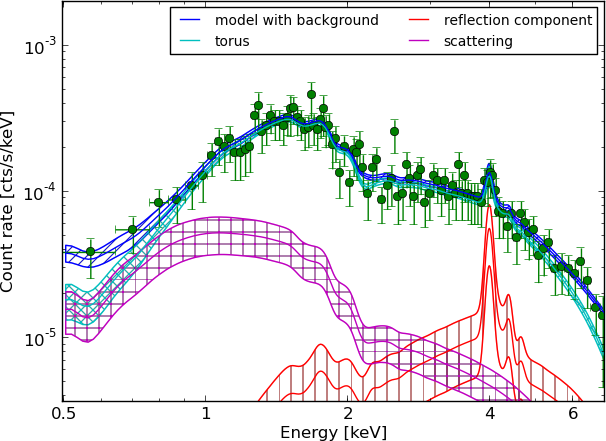
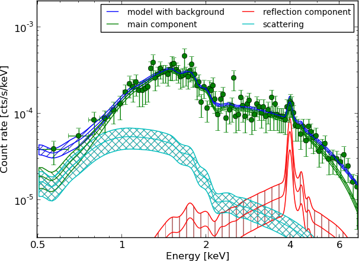

The population behind X-ray AGN samples
Counting and Characterizing
Ringberg Group Meeting / Oct 2013
Johannes Buchner
in collaboration with A. Georgakakis, K. Nandra, L. Hsu, S. Fotopoulou, C. Rangel, M. Brightman, A. Merloni and M. Salvato
Luminosity function —
#/space density of AGN with certain properties
- How many obscured AGN?
- — Central engine
- — LSS assembly
State of the field
- Maximum likelihood estimators with bins
- "Bayesian" inference on ad-hoc parametric models
- Priors can not be motivated for LDDE, LADE with evolving obscured fraction
- essentially doing maximum likelihood style parameter estimation, but with Monte-Carlo
The right way: a 3D field
- degrees of freedom
- but prior: neighboring points should have similar values
- or similar slope
- reconstruct continuous field
- With strong, varying selection bias!
non-parametric parametric reconstruction
- single parameter maximum
- weak correlations through priors
- Best fit with optimization algorithms
- Parameter estimation with MCMC (probably will not converge)
- Model selection using AIC: Information loss for going to simpler LADE, LDDE
Requirements for Luminosity function analyses
- good estimates
- good uncertainty estimates!
- handling ambiguities
Ambiguity

Maximum likelihood lottery

- How can parameters be derived from few counts?
- How to deal with multiple solutions?
- How to find the
correctsufficient model?
Spectral analysis with Bayesian inference
- Full probability distribution (uncertainty) on all model parameters
- Global algorithm (nested sampling, not MCMC or fitting)
- Model comparison
Likelihood ratios are problematic:
- only nested models
- not on borders
- when in doubt, remains with simpler model
Model selection on AGN X-ray spectra


Example - Source 179 z=0.605, 2485 counts
powerlaw
Example - Source 179 z=0.605, 2485 counts
wabs

Example - Source 179 z=0.605, 2485 counts
torus+scattering

Example - Source 179 z=0.605, 2485 counts
torus+pexmon+scattering
Example - Source 179 z=0.605, 2485 counts
wabs+pexmon+scattering
Example - Source 179 z=0.605, 2485 counts
torus+pexmon+scattering

X-ray spectral analysis methodology
| good ol' times | Current | Suggested | |
| Statistic | with binning | C-stat | |
| Error estimation | -stat, Contours of pairs, Fisher matrix, stepping | marginal distributions | |
| Model comparison | what looks better | Likelihood ratio tests | Bayesian model comparison |
| Background handling | subtracted | bin-wise estimates, continuous background model | continuous background model |
| Goodness-of-Fit & discover model deviation | binned, residuals | binned, residuals | +QQ-plots |
Why switch?
- No fiddling with finding optimum (does not fail)
- No fiddling with exploring contours
- Shows multiple solutions
- Produces estimators, uncertainties and model "evidence" simultaneously
- Allows comparing arbitrary models
- Easier!
Conclusions: AGN Model
- Obscuring torus is not a sphere, not a disk, something in between
- Thomson scattering of intrinsic radiation
- Additional compton scattering into LOS from dense region

Have now probability distributions for CDF-S, AEGIS, COSMOS
- Upcoming: relations between and ,
- Upcoming: Luminosity function